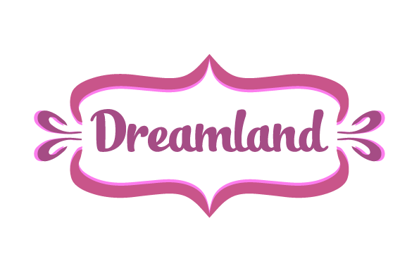
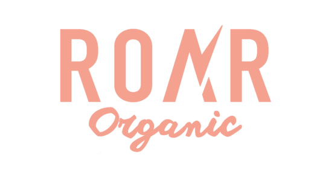
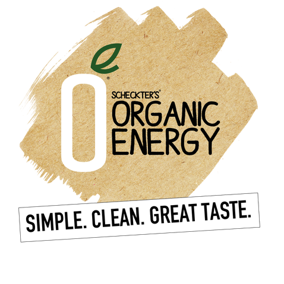

About Us
We use only fresh and natural ingredients, following traditional recipes of our grandmas and bringing something new to every cake we make. Whenever you have a party, we are at your service!
Classic recipes
Organic ingredients
Dosens of fillings
Free tasting
Welcome To Rosemary Cakes
 We are cake lovers as you are!
We are cake lovers as you are!
Rosemary Cakes is a family business. Our founder is Rosemary Williams, a real fan of cooking and baking. Over the past few years, our staff has grown somewhat, but each of us has quivering love for amazing desserts. We use only natural ingredients, respect traditional recipes, but always try to bring something of our own, new and incredibly tasty. Every cake made by Rosemary Cakes is a fresh, stylish and yummy dessert but the most important is that it is YOUR cake, made specially for you, in your favorite colors, with selected fillings and flavors. Have yourself a tasty little holiday! “A delicious cake is not just a pleasant ending of the holiday evening. A cake is the king of the party, and if it fails, it will be remembered for a long time. Conversely, a beautiful and delicious cake becomes a memorable highlight of your holiday. I have always wanted to make cakes that will resonate in the hearts of all sweets lovers. Now I enjoy watching my assistants at Rosemary Cakes caring for cake making process with the same love and awe. We love what we do, and you love to taste it!”
Rosemary WilliamsFounder
Rosemary Cakes Difference
It’s so hard to find something natural in this artificial world! At Rosemary Cakes, we make fresh products from the finest organic ingredients. Everything we need for baking we get from our trusted suppliers, and each ingredient is selected with great care for our client’s health.
  